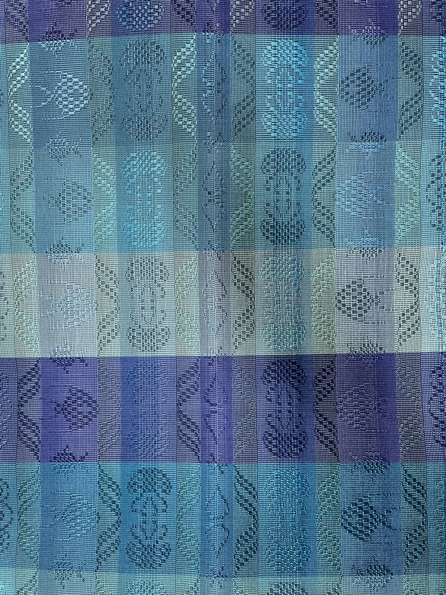
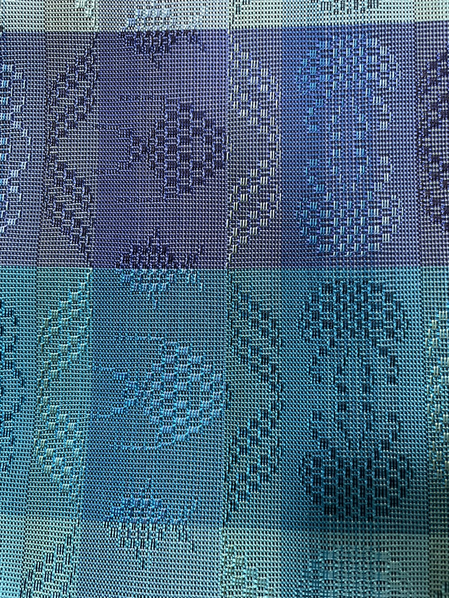
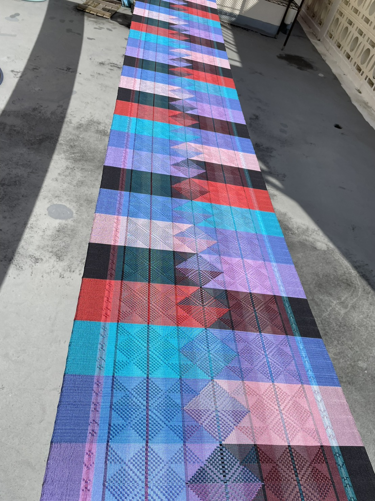
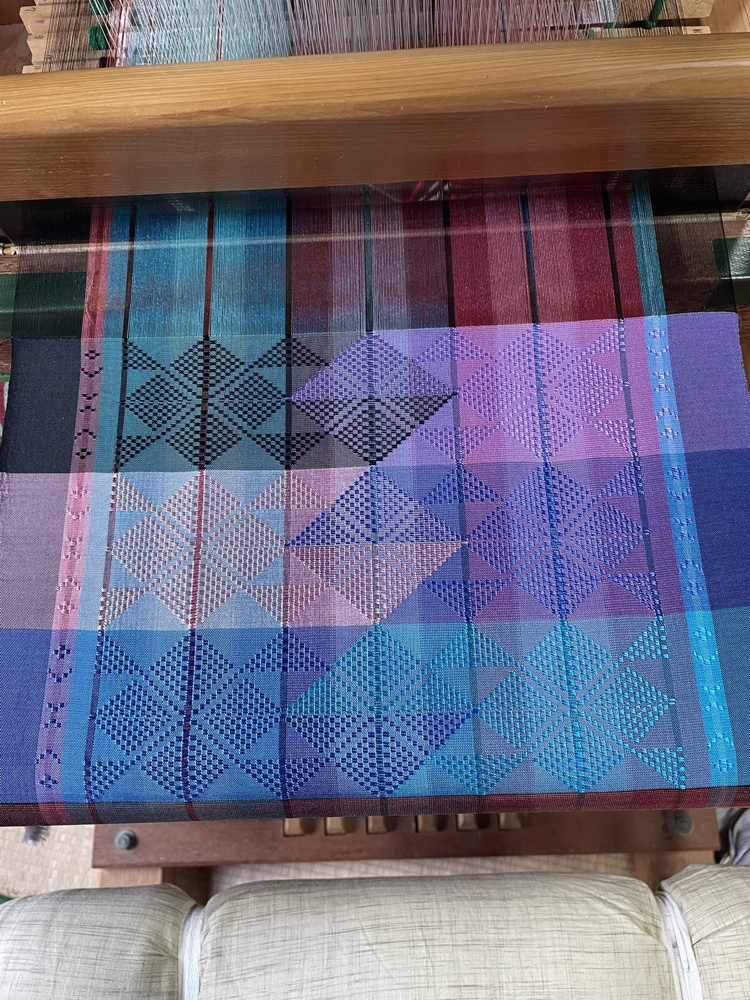

沖縄の光と風を、
一枚の布に込めて。
首里織の伝統、沖縄の自然、その温もりとともに。
豊かな時間を紡ぐ「萌木」の布をご提案します。
手織りの魅力
伝統的な手仕事
色彩を紡ぐ
作品のイメージに合わせて様々な糸を使い、一越一越、丁寧に織り進めます。手仕事ならではの色使いをお楽しみください。
暮らしに寄り添う布
一本一本、想いを込めて織り上げる手織り。機械織りにはない独特の凹凸感と、肌になじむ柔らかさが特徴です。
首里織という誇り
沖縄を代表する伝統工芸
王都・首里の地で育まれた格式高い織物「首里織（しゅりおり）」。
花倉織や道屯織など、非常に高度な技法が現代まで受け継がれています。
萌木では、この伝統を背景に、日常に溶け込む美しい布を追求しています。
Gallery
作品展示
首里染織館 suikara
首里の街にある「首里染織館 suikara」にて萌木の作品を展示・販売しております。沖縄の風土や文化を感じながら、手織りの風合いをぜひご覧ください。

海のような青のグラデーション
青色や水色が美しく交じり合う、海の波のようなデザインの手織り布です。じっくり見ると、いろいろな模様がかくれているのがわかります。

ていねいに織られた模様
布に近づいてみると、糸の1本1本がしっかり重なり合ってできているのが見えます。手作業ならではの、あたたかみがありますね。

太陽の光に映える色彩
赤や青、紫など、とってもカラフルな糸が組み合わさっています。明るい場所に置くと、色がさらに鮮やかで元気をわけてくれます。

布を作り出す魔法の織り機（おりき）
これが「織り機」という、布を作るための特別な機械です！たくさんの糸をピンと張って、少しずつ色を重ねてきれいな模様を作り出します。